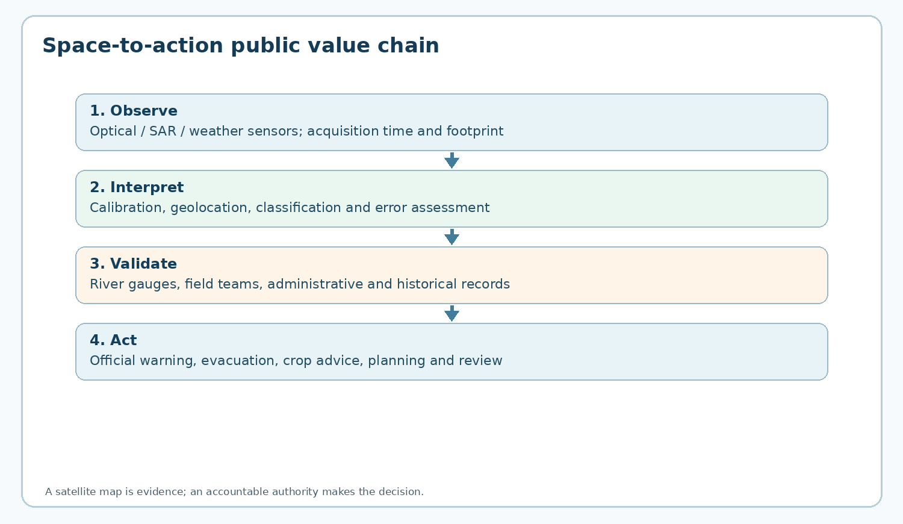
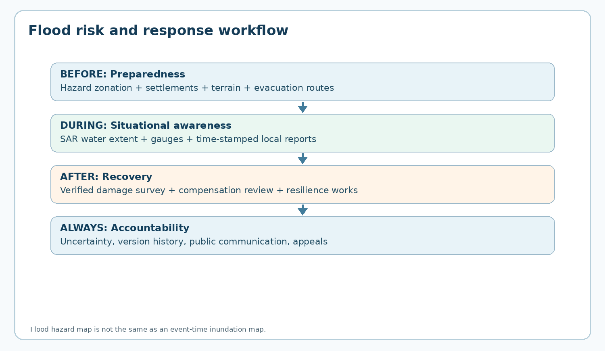
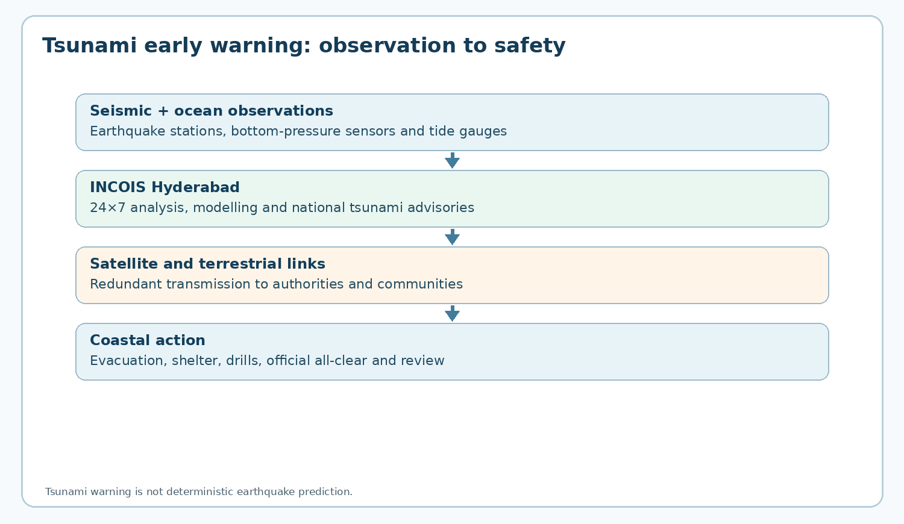

Integrated PDF · Editable master · Preserved original PDF
TGPSC Group I · Paper V · Unit I · Topic 4 · English · 24 October 2026 · Published learning draft / NOT academically approved
The original commission-hosted Group I Notification No. 02/2024, Annexure II, Paper V, Unit I, Item 4 states: “Application of Space Technology in India with references to Education, Agriculture and Industry. Climatic change, Floods, Cyclone, Tsunami, Natural and Manmade Disaster Management.” [S01]. This chapter treats the Item 4 applications and disaster-management focus; Item 3's history of INSAT, IRS, EDUSAT and Chandrayaan-1 is covered in the preceding chapter.
| Official component | Detailed coverage | Key distinction |
|---|---|---|
| Education | Section 3, 14 | Satellite communication, hybrid learning, equity and last-mile teaching |
| Agriculture | Sections 4–5, 14 | Crop area, FASAL, soil moisture, water, validation |
| Industry | Sections 6, 12, 14 | Siting, infrastructure risk, urban flood, industrial incidents |
| Climatic change | Section 7 | Weather vs climate, monitoring, attribution and adaptation |
| Floods | Section 8 | SAR, gauges, inundation, flood hazard, Telangana cases |
| Cyclone | Section 9 | IMD stages, satellite sensing, inland impacts |
| Tsunami | Section 10 | INCOIS Hyderabad, buoy/seismic network, advisories |
| Natural disaster management | Sections 11, 13, 15–16 | Multi-hazard, response cycle, validation and governance |
| Manmade disaster management | Section 12 | Industrial incidents, dam and infrastructure risks |
Provenance policy. All MCQs and mains questions below are original practice. No item is presented as an official TGPSC previous-year question without an original commission question paper and question number. Student-facing source references are keyed to a dated source register, not to unverified page numbers.
Space technology creates public value when satellites measure conditions, specialists interpret observations, authorities validate evidence and institutions act. In education it expands content reach but cannot replace teachers; in agriculture it helps estimate area and stress but cannot directly measure each farm's yield; in industry it assists spatial planning but does not establish legal liability. Climate monitoring requires long time series, while floods, cyclones and tsunamis demand different sensors and warning institutions. For Telangana, Hyderabad's NRSC and INCOIS, Godavari flood mapping and the 2025 NRSC–HYDRAA cooperation illustrate national and local applications. The central exam principle is to distinguish measurement, inference, warning and accountable decision.
| Tool or concept | What it does | What it does not establish |
|---|---|---|
| Optical imagery | Spectral land-cover and vegetation information | Reliable cloud-obscured observations |
| SAR imagery | Microwave backscatter; flood/soil and structural observations | Perfect flood detection under every land cover |
| NDVI | Relative vegetation greenness | Crop yield or crop loss by itself |
| NDEM | Disaster geospatial decision support | Statutory authority to order evacuation |
| INCOIS tsunami system | Seismic/ocean assessment and advisories | Exact earthquake prediction |
| IMD cyclone system | Operational cyclone forecasts and warnings | A guarantee of precise local impacts |
| Bhuvan | Thematic geospatial layers and applications | Final legal title to land |
A satellite image is not a decision. It is a measurement of electromagnetic radiation, acquired at a particular time, transformed through calibration, atmospheric correction, georeferencing and interpretation, and combined with other evidence. The useful public service is the complete chain: a problem is defined; a sensor and observation frequency are selected; a data product is validated; an accountable authority receives a comprehensible finding; and an action is taken. This distinction is the organising principle for the entire topic. Space technology includes Earth observation, meteorological sensing, satellite communication and satellite navigation. These functions complement rather than replace one another: a flood map may use radar imagery, a relief vehicle may use navigation, and an isolated control room may need satellite communications. A high-resolution image with no field team or response protocol can have less practical value than a coarser, timely map linked to a functioning district administration.
Earth observation satellites generally use passive optical/infrared instruments or active radar. Optical data describe reflected sunlight and thermal emission; clouds, haze, viewing geometry and seasonal vegetation change interpretation. Synthetic aperture radar (SAR) emits microwaves and records backscatter, often permitting observation through clouds and at night, but smooth wet surfaces, vegetation, buildings and layover can produce confusing signatures. Weather satellites provide frequent broad-area measurements, whereas some polar orbiters provide finer spatial detail with longer revisit intervals. Spatial resolution, revisit frequency, latency, spectral information and measurement uncertainty therefore form a trade-off. An examiner should reject the claim that any single satellite is simultaneously best for every application.
The Indian institutional chain is also important. ISRO develops and operates many space systems; the National Remote Sensing Centre (NRSC), headquartered in Hyderabad, generates geospatial products; the Space Applications Centre develops application technology; the India Meteorological Department (IMD) issues operational weather and cyclone forecasts; INCOIS issues tsunami advisories; and national/state disaster authorities coordinate preparedness and response. Bhuvan, Bhoonidhi, MOSDAC and the National Database for Emergency Management (NDEM) are different services, not interchangeable names. The governance question is who verifies a map, who authorises action, who can correct errors, and how residents are informed. [S02][S03][S04][S05]
Applied distinction. In a Godavari flood, radar imagery may delineate standing water, a river gauge may establish stage, a terrain model may identify roads at risk, and village officials must confirm whether a mapped dark patch is a waterlogged field or a permanent tank. The resulting evacuation route is a policy product, not a raw satellite photograph.
Administrative design and cost test. A procurement committee should distinguish the cost of buying imagery from the full lifecycle cost of a service: calibration, software, storage, trained staff, validation, communication and maintenance. It should compare the expected reduction in losses against these costs, including the costs of false alarms. A small, verified product delivered reliably may outperform an expensive dashboard with uncertain updates. Public value can be assessed using decision latency, accuracy on representative validation sites, percentage of at-risk households reached, and action completion. These metrics prevent agencies from reporting only numbers of satellite scenes processed. A disaster-control room should also maintain a fallback procedure when the satellite link, vendor API or internet connection fails. The satellite-to-decision chain must remain auditable so an official can later explain why a specific village was prioritised.
Every pixel aggregates the signal from a ground footprint; its digital number is not automatically a physical measurement. Radiometric calibration converts instrument response into interpretable radiance or reflectance, while geometric correction locates it on the earth. Multispectral instruments separate wavelengths because healthy vegetation, dry soil, water and built-up surfaces interact with light differently. A common vegetation index is NDVI = (near-infrared − red)/(near-infrared + red). It is a relative greenness indicator, not a direct yield measurement. Dense canopy saturation, soil background, shadows and drought-tolerant crops can complicate inference. A decline in NDVI may reflect harvest, planting delay, cloud contamination or crop stress; the interpretation must use the crop calendar and local observations.
SAR measures the microwave signal returned to the antenna. Flooded open water often produces low backscatter because a smooth surface reflects energy away, but water beneath trees can produce double-bounce signals and urban streets may appear bright. Microwave frequency, polarisation, incidence angle and surface roughness matter. SAR is particularly valuable in monsoon flood mapping because optical instruments may be obscured by clouds; it does not remove the need for classification accuracy assessment. A ground-control or validation sample should represent crop types, settlement density and water conditions. A confusion matrix can separate omission error (flooded land missed) from commission error (dry land wrongly mapped as flooded).
Resolution is multidimensional. Spatial resolution concerns feature size; temporal resolution concerns how often an observation is available; spectral resolution concerns wavelength discrimination; radiometric resolution concerns detectable intensity differences. The product also has processing latency: a useful satellite pass at 06:00 is not a timely warning if analysis arrives at midnight. Data assimilation merges observations with numerical models; it is neither simple averaging nor proof that model forecasts are correct. Public officials should record image acquisition time, map publication time, coordinate reference system, legend, scale and uncertainty. [S03][S06]
Worked interpretation. Suppose an irrigated field has NDVI 0.72 in July and 0.35 in September. Without sowing and harvest dates, rainfall records and field inspection, neither a crop-failure claim nor a productivity percentage is justified. An examination answer should explain the alternative hypotheses and propose validation rather than invent a yield number.
Reading an accuracy table. Suppose 100 validation locations include 40 truly flooded sites. The map identifies 36 of these and incorrectly flags 12 dry sites. Recall is 36/40 = 90%, precision is 36/(36+12) = 75%, and 4 flooded sites are missed. These metrics answer different questions: recall concerns the chance of finding flooded places; precision concerns the fraction of alerts that are correct. For emergency rescue, missing isolated settlements may be especially costly, but too many false alerts can overwhelm responders. Thresholds should therefore be chosen with the district's actual response capacity in mind. The confusion matrix must be based on independent, time-matched validation; using training samples or later flood conditions would exaggerate accuracy. State which metric you are using rather than reporting a single ambiguous 'accuracy' percentage.
Space-enabled education combines communications infrastructure with educational institutions and teaching practice. EDUSAT (GSAT-3), launched in 2004, was dedicated to educational communication, but its historical role should not be confused with the present availability of an operational EDUSAT service. The enduring model is satellite-enabled distribution of lectures, teacher training, educational broadcasts and two-way interaction where terrestrial connectivity is inadequate. Satellites can cover dispersed habitations efficiently, especially when a broadcast lesson is shared by many learners; they cannot by themselves supply laboratories, local-language explanations, classroom mentoring or disability-accessible materials.
A one-way broadcast delivers the same material to many locations; a two-way VSAT arrangement can support questions and remote mentoring but requires terminals, power, scheduled bandwidth and trained facilitators. Modern delivery is hybrid: terrestrial broadband or mobile networks may be cheaper in dense urban areas, while satellite backhaul can support remote schools or continuity after a terrestrial outage. Content rights, data privacy, accessibility, language, equipment maintenance and recurring service charges determine whether a pilot becomes a reliable programme. The appropriate outcome indicator is not simply the number of connected classrooms but attendance, comprehension, teacher preparedness and equitable access.
Telangana applications include connecting isolated tribal or rural learning centres, disseminating disaster-safety modules, and training agricultural extension staff using shared audiovisual material. These are potential implementation designs, not evidence that a specific current state programme has already delivered the claimed outcome. Educational GIS exercises can also use publicly accessible Bhuvan layers: students compare changing water bodies, urban expansion and vegetation, while learning that map resolution and dates constrain conclusions. When discussing equity, account for girls' access to devices, electricity reliability, language and students with visual or hearing disabilities. [S02][S07]
Policy comparison. Satellite broadcast excels at reach and resilience; in-person teaching excels at diagnosis and feedback. The strongest design assigns satellites to content distribution and emergency connectivity while funding teachers, local tutors, assessments and repair budgets. A cost-benefit appraisal should compare cost per learner who improves, not cost per terminal installed.
Educational delivery architecture. Consider a residential school in a remote forest area. A satellite backhaul can connect the campus to a regional teaching centre when fibre is unavailable. However, a realistic deployment requires solar or generator backup, terminal maintenance, content caching for outages, student devices, teachers who can contextualise lessons and assessment support. Where local terrestrial connectivity becomes affordable, the design should permit migration rather than locking the school into an expensive satellite-only arrangement. A disability-inclusive lesson must offer captions, transcripts and accessible exercises. Remote lectures are especially useful for specialised science demonstrations and teacher development, but hands-on experiments still require safe physical equipment. Therefore the educational role of space technology is best framed as strengthening a blended public system rather than replacing educators.
Agricultural Earth observation begins by distinguishing acreage, condition, yield and production. Crop area estimates require identifying where and when a crop is planted; condition indices describe canopy or moisture; yield estimation requires models, agronomic factors and ground observations; production equals area multiplied by yield. Confusing these quantities produces misleading policy claims. India's FASAL framework combines satellite data, agro-meteorology and land-based observations for crop forecasts, with the Mahalanobis National Crop Forecast Centre playing an operational role. Satellite classification can help track sowing progression, crop diversification, irrigation and harvest, but mixed pixels and small fragmented holdings remain difficult.
Optical and SAR data are complementary. Optical imagery provides crop spectral signatures when skies are clear; radar can observe during cloudy monsoon periods and is sensitive to structure and surface moisture. Time-series classification is more reliable than one image because paddy transplanting, canopy growth and harvest have characteristic trajectories. Ground truth should be stratified across soil, irrigation source, crop type and farm size. A village-level map may misclassify intercropping or crops beneath tree cover; an administrative aggregate may hide household losses. Hence compensation or insurance should not be determined solely by a single pixel.
The ISRO/NRSC CROP pilot reported in April 2025 used EOS-04, EOS-06 and Resourcesat-2A observations for 2024–25 rabi wheat monitoring across eight major wheat-growing states. This is an example of a dated national technical application, not a Telangana wheat estimate. The 2024 ISRO soil-moisture product based on EOS-04 SAR was described as a 500-metre open data resource; that resolution does not identify the condition of every individual small farm. For Telangana, practical use cases include monitoring paddy area in irrigated command zones, assessing dryland cotton stress, locating waterlogging and comparing crop patterns before and after irrigation investments. [S08][S09][S10]
Worked example. If remote sensing estimates 12,000 hectares under a crop and a validated statistical yield estimate is 3 tonnes per hectare, indicative production is 36,000 tonnes. It is not a measured harvest, and uncertainty in both factors must be reported. If yield estimates are unavailable, an NDVI map cannot fill that gap by assertion.
Crop-loss dispute example. A district plans to use remote sensing to identify damaged paddy fields after a flood. A classifier may detect a reduction in canopy greenness, but a recently harvested field and a flood-damaged field can appear similarly bare. Officials should combine acquisition dates, crop calendars, SAR water evidence, local damage reports and sample field visits. A farmer should be able to challenge a wrong classification with credible local evidence. If the map estimates 10,000 hectares and the field sample suggests a 7% overcount, the district must revise the area estimate or report uncertainty; it should not hide disagreement behind false precision. The technology's legitimate benefit is faster, more consistent screening of claims, not the elimination of due process or crop-cutting evidence.
Satellite-based water management spans surface-water extent, soil moisture, catchment condition, irrigation demand and drought early warning. A water-body inventory can identify tank encroachment or seasonal drying, but a single image cannot establish legal ownership or long-term storage capacity. Optical water indices are useful in cloud-free conditions; SAR can supplement monsoon observation. Elevation models delineate drainage and possible flow paths but need accurate local topography for urban stormwater decisions. Groundwater is mostly not directly visible to conventional optical satellites: aquifer level requires wells, hydrogeology and, at very large scales, specialised gravity observations. A surface greenness increase is not proof of groundwater recharge.
Meteorological drought means a rainfall deficit; agricultural drought means inadequate soil moisture for crops; hydrological drought means deficient surface or groundwater resources. These need not occur simultaneously. Soil moisture, rainfall anomalies, vegetation trajectories and reservoir status can be combined to identify stress, but a policy trigger should specify the index, baseline period and ground verification. Seasonal waterlogging can also coexist with long-term aquifer depletion. The term 'drought-free' should never be inferred from a single wet week.
In Telangana, tank cascades and the Godavari and Krishna basins create spatially uneven water risks. A practical district dashboard could combine NRSC water-body layers, rainfall gauges, irrigation-department releases, groundwater observation wells and crop calendars. It should distinguish a storage deficit from a distribution failure: a tank may be full while tail-end fields lack water. Where a reservoir release increases flood risk downstream, satellite monitoring helps map exposure but does not replace hydraulic routing or legal operating rules. [S03][S09][S11]
Planning trade-off. Remote sensing improves spatial visibility, yet overconfident interpretation may penalise farmers who use intercropping, rainwater harvesting or local water-sharing systems invisible at pixel scale. A defensible programme publishes data limitations and offers an appeals mechanism when satellite-derived evidence affects livelihoods.
Water accounting nuance. A lake's surface area is not equivalent to stored volume because depth and basin shape vary. Satellite observations can reveal expansion or contraction of the water surface; estimating volume requires bathymetry, elevation or a calibrated area–volume curve. Likewise, an apparent improvement in vegetation after irrigation can coexist with unsustainable groundwater abstraction. In a Telangana tank cascade, upstream impoundment may reduce downstream availability even if the upstream tank looks healthy. A basin-level approach therefore combines spatial data with water-balance equations, reservoir operations and groundwater observation wells. Public reporting should distinguish rainfall anomaly, agricultural water stress and hydrological storage deficit. This prevents a simplistic policy in which one 'green' satellite index becomes the sole basis for drought declarations or water-allocation disputes.
Industrial applications include site suitability, corridor planning, asset inspection, environmental compliance and continuity planning. Satellite imagery can reveal land cover, transport links, floodplain proximity, quarry expansion and thermal anomalies. It cannot prove a factory's emissions compliance, labour safety or property title without complementary inspections and records. Industrial location analysis should compare terrain, flood exposure, water availability, transport cost, ecological sensitivity and settlement displacement rather than treating available land as vacant land. Geographic information systems can overlay these constraints transparently.
For ports, railways, roads and power lines, repeated images may show land movement, erosion, encroachment and post-disaster access problems. Interferometric SAR can measure some forms of surface displacement, but coherence loss, atmospheric delays and geometry can compromise the signal. Thermal observations can identify broad heat patterns, not reliably identify every industrial discharge source. In an emergency, communications satellites can restore command connectivity where fibre or mobile towers fail; navigation supports logistics, but positional accuracy depends on equipment, obstruction and augmentation.
The NRSC–HYDRAA memorandum signed on 11 April 2025 and announced on 22 April 2025 is a concrete Telangana case. Its stated scope includes a Bhuvan-based portal integrating approximately four decades of geospatial databases of the Telangana Core Urban Region with field information, supporting water-body and public-asset protection and disaster management. An MoU is a commitment to collaborate, not proof that every proposed dataset or enforcement result is already operational. This distinction is critical when writing current-affairs answers. [S12]
Hyderabad planning case. A proposed industrial estate near a drainage channel should be screened using multi-season flood extent, terrain and approved land-use plans. A map can flag a risk; only competent authorities, consultation and field investigation can decide acquisition, compensation and permissible construction.
Industrial corridor screening matrix. A transparent suitability model can score a proposed location on flood susceptibility, transport connectivity, existing land use, water stress, ecological sensitivity and distance from settlements. Weights should be published because a change in weights can move the preferred site substantially. Satellite imagery can identify recent land conversion and broad physical conditions, but the model must not assign a low social cost simply because informal settlements are absent from official maps. Environmental impact assessment, local consultation and land records are separate requirements. After construction, repeat imagery can monitor expansion, heat and drainage changes, while direct measurements assess air and water pollution. The best answer distinguishes preliminary geospatial screening from binding regulatory approval and acknowledges competing development and environmental objectives.
Weather describes atmospheric conditions over hours or days; climate refers to statistical patterns over decades. A satellite's cloud-top temperature image is weather evidence, not by itself proof of climate change. Climate analysis requires calibrated long-term records, stable processing, homogenisation and comparison with in-situ observations. Climate change alters background probabilities of extremes, but attribution of an individual flood or cyclone requires specialised analysis. It is inaccurate to state that satellites alone prove that every storm was caused by global warming.
Geostationary meteorological satellites provide frequent regional views and are useful for tracking cloud development and cyclone motion. Polar-orbiting satellites contribute different vertical, microwave and ocean measurements. IMD's satellite meteorology services describe imagery, water-vapour, wind and other products used with numerical weather prediction; the service's operational configurations can change over time. MOSDAC hosts meteorological and oceanographic products, including browse imagery, satellite data products and some experimental forecasts. A forecast is an inference combining physics and observations; a satellite image is one input. [S05][S13][S14]
Climate-related Earth observation extends to vegetation greenness, land surface temperature, coastal change, snow cover, fire and atmospheric composition. The ISRO April 2025 EOS-06 OCM-3 vegetation analysis illustrates how a monthly NDVI sequence can track broad greenness patterns. Yet a greening trend may reflect irrigation, crop expansion or seasonal change rather than ecosystem recovery. Likewise, a shrinking urban lake may reflect drainage modification, land-use conversion or drought. Telangana's heat-island studies need both satellite surface temperature and ground air-temperature monitoring because the two are not identical. [S15]
Analytical safeguard. Compare long-term baselines, include uncertainty and separate hazard trends from exposure trends. Increased flood losses may reflect more buildings in floodplains even without a proportionate increase in rainfall extremes. Conversely, lower mortality after better warnings does not prove that the hazard became weaker.
Climate attribution test. Imagine an unusually intense rainfall event over Hyderabad. A satellite records the storm's cloud pattern, and rain gauges record accumulation. Neither observation alone determines how much human-induced climate change altered its probability. Attribution studies compare the observed climate with a modelled counterfactual without anthropogenic forcing, accounting for uncertainty. Long-term satellite records also need calibration continuity across changing sensors and orbit conditions. Urban heat analyses should distinguish radiometric land-surface temperature from the air temperature experienced by a worker in shade. Policies can still act under uncertainty: improving drainage, shade and heat-health warning systems often yields benefits even without event-specific attribution. A good mains answer separates observation, detection of a trend, causal attribution and adaptation policy.
Flood risk has four elements: the hazard (water depth, velocity and duration), exposure (people and assets), vulnerability (susceptibility to harm) and response capacity. Satellites contribute principally to hazard and exposure mapping; they do not directly measure every household's coping capacity. Flood monitoring combines rainfall and river gauges, reservoir releases, hydraulic models, terrain, historical inundation and satellite observations. Flood-hazard zonation describes potential or historical susceptibility, whereas a near-real-time inundation map depicts water detected around a specified acquisition time. Confusing the two leads to bad evacuation and land-use decisions.
During a cloudy monsoon event, SAR can rapidly map extensive open-water inundation. However, a preliminary flood product may include rainwater accumulation in low-lying fields, omit water under dense vegetation, or be affected by radar geometry. NRSC's 20 August 2025 Mancherial-area Telangana flood map explicitly cautions that it is a rapid product, that source resolution and interpretation impose limitations, and that no ground verification was done. This warning is not a footnote to ignore; it defines appropriate operational use. A district collector should combine such maps with field reports before identifying inhabited locations for rescue. [S16]
The response sequence is pre-event exposure inventory, warning thresholds, evacuation planning, flood extent update, road-access analysis, relief allocation and post-event loss assessment. Satellites can reveal isolated villages and damaged corridors, while drones and local teams can verify building-level damage where lawful and safe. Disaster maps should retain acquisition and publication timestamps; otherwise a retreating flood may be confused with rising water. For Telangana, Bhadrachalam on the Godavari and Mancherial provide concrete contexts for integrating remote-sensing layers with local river gauges and floodplain settlements. [S17]
Worked decision. A SAR image shows a bridge approach flooded at 06:00. Before sending relief trucks at 14:00, officials should obtain the latest road report, water level trend and bridge inspection. The satellite layer is a warning and planning aid, not a live guarantee of road safety.
Flood timeline exercise. At 05:00, a satellite pass detects likely inundation; at 08:00, the map is processed; at 10:00, river gauges show rising levels; at 12:00, a local bridge is reported unsafe. A control-room map that displays only the 08:00 publication time could wrongly imply that water extent was measured at 08:00 or remains unchanged at noon. The correct product lists acquisition and processing times, integrates later observations and marks uncertain roads for verification. Relief priorities should reflect hospitals, elderly residents, inaccessible settlements and water supply, not just the largest coloured flood polygon. Post-event damage mapping needs a different protocol because structural damage and compensation cannot be inferred reliably from flood extent alone. This example tests temporal reasoning, risk prioritisation and governance together.
A tropical cyclone is a rotating low-pressure system that draws energy from warm ocean water and moist convection. Satellite imagery helps locate circulation, infer cloud organisation, monitor convection and estimate intensity when direct observations are sparse. Scatterometers estimate ocean surface winds, microwave sensors reveal some internal structures, and geostationary imagery provides frequent cloud motion. Yet maximum sustained wind at the surface, storm surge and landfall impacts depend on models, observations and coastal geometry; a dramatic cloud picture alone cannot yield a reliable village-level forecast.
IMD's Regional Specialised Meteorological Centre in New Delhi coordinates cyclone bulletins for the north Indian Ocean. Its documented four-stage system is pre-cyclone watch (normally about 72 hours before adverse weather), cyclone alert (at least 48 hours), cyclone warning (at least 24 hours) and post-landfall outlook (about 12 hours before landfall). These timings describe the standard procedure, not a guarantee that every rapidly forming storm will permit all stages. Bulletins include track, intensity, rain, wind, storm surge and advice; they are issued to authorities and the public through multiple channels. Warning lead time has little value if evacuation shelters are inaccessible or messages fail to reach fishers. [S18]
Cyclone risk is not limited to coastal wind. Inland Telangana can experience intense rain, urban flooding, agricultural losses and power interruptions from systems that move westward after landfall. Planning should therefore combine IMD impact-based forecasts with drainage maps, crop calendars and critical-infrastructure inventories. A false-alarm debate must distinguish probabilistic uncertainty from poor communication: conservative evacuation may be rational where potential mortality is high, but warnings should explain what is known and what may change. [S18][S19]
Exam comparison. A satellite detects cloud patterns; IMD issues an authoritative forecast; the district administration orders evacuation; and communities act. Conflating these roles misstates institutional responsibility. Post-landfall imagery supports damage assessment but cannot substitute for rapid medical and electricity restoration.
Cyclone hazard differentiation. A cyclone's forecast track is not its complete risk footprint. Rainfall can be intense well away from the centre, storm surge depends on coastal geometry and tide, and strong winds can damage power infrastructure. A 'cone of uncertainty' concerns forecast track uncertainty, not a boundary beyond which impacts are impossible. For inland Telangana, heavy rainfall and reservoir operations may be more relevant than coastal storm surge. District planners should convert the forecast into a matrix of likely effects on bridges, crops, hospitals, electricity and evacuation routes. Multiple warning channels are essential because the same storm can disable mobile towers. Risk communication should explain confidence, update times and protective actions without presenting probabilistic forecasts as certainties.
A tsunami is a series of long-period waves usually generated by abrupt displacement of seawater, commonly from a submarine earthquake; landslides and volcanic processes are other possible causes. It is not a cyclone-driven storm surge and not an ordinary tide. In deep water, a tsunami may have a small surface amplitude while travelling very rapidly; as it enters shallow coastal water, the wave slows and may increase in height, with inundation strongly shaped by bathymetry and topography. Not every large earthquake generates a destructive tsunami, and the first wave need not be the largest.
The Indian Tsunami Early Warning Centre at INCOIS in Hyderabad has operated since October 2007. Its system uses seismic observations, deep-ocean bottom-pressure recorders, tide gauges, numerical simulations and communications networks to assess tsunami potential and issue advisories. The INCOIS public description notes satellite communication for real-time transfer of buoy data; satellites are a communications link and an observation-support component, not the sensor that detects every earthquake. Earthquake detection itself relies primarily on seismic instruments. The warning centre operates continuously and disseminates advisories to competent authorities. [S20][S21]
Risk reduction needs coastal inundation maps, evacuation routes, signage, drills and education on natural warnings such as strong or long shaking near the coast or sudden abnormal sea retreat. An official alert should be followed where available; if natural warning signs appear, people should not wait for a phone notification before moving to higher ground. Telangana has no sea coast, but INCOIS is located in Hyderabad and provides a nationally important service. This makes the topic a useful example of how Telangana-based scientific institutions protect populations elsewhere. [S20]
Critical distinction. A tsunami early-warning system is an end-to-end public safety system: observation → analysis → advisory → last-mile communication → evacuation. Better satellite bandwidth alone does not ensure safety if local authorities have no rehearsed evacuation plan.
Tsunami travel-time reasoning. In deep water, the approximate long-wave speed is sqrt(g × depth). At 4,000 metres depth, this gives sqrt(9.81 × 4,000), or roughly 198 metres per second—about 713 kilometres per hour. The simple formula is an approximation for long waves and does not predict actual coastal run-up. As water shallows, the speed decreases and wave height may grow; complex bathymetry changes the outcome. Deep-ocean pressure recorders help confirm tsunami signals, while seismic data provide rapid earthquake parameters. Satellite links carry sensor data and alerts but are not themselves underwater pressure gauges. The first arrival is not necessarily the most damaging wave, which is why communities should remain away from the coast until competent authorities issue an all-clear.
The syllabus names floods, cyclones and tsunamis, but a coherent disaster-management answer also understands drought, landslides, earthquakes, forest fires, heatwaves and lightning. Earth observation can locate burned areas, vegetation dryness, landslide scars, damaged roads and exposed settlements. It generally cannot predict the precise time of an earthquake; claims of deterministic earthquake prediction from satellite anomalies are not established operational practice. Earthquake risk management instead prioritises hazard zonation, building codes, retrofitting and emergency readiness. Landslide susceptibility maps combine slope, lithology, land cover, rainfall and previous failures; they do not guarantee which slope will fail at a particular hour.
Forest-fire monitoring uses thermal anomalies, smoke and vegetation conditions, but small fires may be missed and hot industrial surfaces may create false detections. Heat risk mapping can combine satellite land-surface temperature with shade, building density and population vulnerability, but surface temperature differs from the air temperature experienced by people. Agricultural drought assessment needs multiple seasons and crop-stage context. Satellite information is strongest when it identifies where to investigate, when to prioritise scarce resources and how to evaluate a response; it is weakest when treated as a substitute for engineering standards or community knowledge. [S04][S11]
Telangana's practical risk portfolio includes heatwaves, lightning, urban flooding, drought and occasional large river floods. A district risk register should include schools, hospitals, water pumps, substations and routes serving vulnerable hamlets. A satellite-derived exposure layer should be updated after new roads, housing or industrial facilities are built. Risk is dynamic: new settlement on a floodplain can increase exposure even when hazard statistics are unchanged.
Governance lesson. A technically impressive map is not a mitigation measure until its findings are translated into zoning, maintenance, evacuation or safer construction. Disaster risk reduction begins before a disaster, not after the first emergency image arrives.
Earthquake misconception. Some experimental research examines thermal or ionospheric anomalies before earthquakes, but this is not a validated deterministic operational prediction method. Claiming that a satellite can give the exact time and location of the next earthquake would mislead students and disaster managers. For earthquakes, satellite interferometry is better established for measuring ground deformation associated with events and longer-term motion, subject to geometry and atmospheric limitations. Practical risk reduction instead uses seismic hazard maps, earthquake-resistant design, retrofitting, public drills and rapid post-event damage assessment. The same caution applies to forest-fire thermal hotspots: a hotspot is an alert for verification, not automatically proof of a specific cause or a legally established violation. An exam answer gains credibility by stating these boundaries explicitly.
Human-made disasters include industrial chemical releases, fires, dam failures, transport accidents, oil spills, mining subsidence and infrastructure breakdowns. Space systems can support situational awareness by mapping smoke, thermal anomalies, surface-water changes, large oil slicks and access routes, but they cannot reliably identify every toxic compound or prove regulatory culpability. A chemical plume requires atmospheric dispersion modelling, on-site sensors, wind observations and health surveillance. Industrial inspection records and environmental permits remain essential evidence. Satellite-derived anomaly detection should trigger proportionate field investigation rather than automatic accusation.
For dams, satellite observations can track catchment rainfall, reservoir surface extent and, in some settings, ground deformation. Structural safety requires engineering inspections, instrumentation, operating records and emergency-action plans. For transport disruptions, imagery can identify washed-out corridors but cannot certify bridge load capacity. Communications satellites and navigation can aid coordination when terrestrial networks fail. Cyber incidents affecting critical infrastructure are human-made hazards that are largely invisible in satellite images, demonstrating why the disaster portfolio must extend beyond remote sensing.
A sound incident-management protocol separates early warning, command authority, public disclosure, independent evidence preservation, compensation and long-term remediation. Where images contain identifiable private activity, data governance and proportionality matter. Industrial facilities may dispute satellite interpretations; regulators should publish measurement methods and permit technical review without surrendering enforcement authority. Telangana's industrial corridors and Hyderabad's infrastructure offer realistic cases for such safeguards, but a case study must not invent an actual spill or enforcement action. [S04][S12]
Worked governance scenario. An anomalous thermal signature appears near a factory after a fire report. The district control room should check incident calls, wind and ground sensors, dispatch trained responders, issue risk-based public guidance and archive satellite metadata. Declaring a specific pollutant from the image alone would be scientifically unjustified.
Industrial plume scenario. Following a chemical plant fire, a thermal satellite image may identify the location of intense heat, while meteorological satellites and weather stations help describe atmospheric conditions. Identifying airborne toxins requires ground sampling or validated instruments sensitive to the relevant chemical species. A plume dispersion model also depends on release height, wind profile and emission rate. A public alert should state what is known, what remains uncertain and which protective actions are recommended. Long-term monitoring must examine contaminated water, soil and health outcomes. The ethical danger is two-sided: overclaiming from imagery can unfairly accuse an operator, while dismissing an anomaly can delay protective action. Documented field verification and transparent regulatory procedure protect both public health and due process.
India's Disaster Management Act, 2005 established the statutory framework for national, state and district disaster management institutions. The National Disaster Management Authority (NDMA), State Disaster Management Authorities and District Disaster Management Authorities have different roles; an ISRO data centre does not replace their legal authority. Disaster planning follows a continuous cycle: prevention and mitigation, preparedness, early warning, response, recovery and reconstruction. Space data can contribute at each stage, but procurement, public communication and accountability remain administrative functions. Institutional details should be checked against the current amended law rather than assuming the 2005 text has never changed.
A disaster management plan should name the trigger, accountable official, communication channels, shelter capacity, accessible transport, backup power and after-action review. Maps should use standard legends and common coordinate systems so police, health, irrigation and municipal teams do not act on conflicting layers. NDEM supplies a geospatial decision-support environment; Bhuvan provides thematic layers; MOSDAC provides meteorological/oceanographic information; SACHET is a national alert dissemination portal. These tools have different purposes. The last mile may require SMS, radio, local volunteers, public-address systems and translated warnings, particularly when mobile networks are down. [S04][S22]
The distinction between hazard map and legal order is important. A flood layer may inform evacuation but does not itself confer authority to demolish property. Likewise, a satellite observation of encroachment must be evaluated against cadastral records, court orders and lawful procedure. A resilient programme provides audit logs of when imagery was acquired, interpreted and used; this allows later review of both false positives and missed warnings.
Telangana governance case. An urban flood dashboard for Hyderabad should connect GHMC drainage and road maintenance, HYDRAA asset data where relevant, rainfall gauges, NRSC imagery and district emergency coordination. The dashboard must support field confirmation and public warnings rather than simply displaying colourful polygons.
Response-chain stress test. A district plan should simulate simultaneous failure of grid electricity, mobile data and one major road during heavy rain. Satellite communications may provide a backup link, but terminals still need power, trained operators and predefined bandwidth priorities. Evacuation decisions must identify the official authorised to act when the control room is unreachable. Maps should be printable and distributed offline to field teams. Vulnerable residents may not own smartphones, so warning dissemination must include radio, sirens, community volunteers and accessible formats. After the event, a documented review should compare map predictions with actual inundation, rescue delays and communication failures. This converts a one-time technical deployment into institutional learning and reveals whether investments reduced harm.
Telangana is an inland state with sharp spatial differences between dense Hyderabad, dryland agriculture, forested tracts and large river basins. Its most useful space applications are not identical to those of coastal states. In Hyderabad, satellite and GIS data can monitor water bodies, urban expansion, surface heat and flood exposure. Along the Godavari, repeated inundation maps can guide evacuation and identify road isolation. In dryland districts, vegetation and soil-moisture observations can help prioritise crop inspections and water conservation. In forest areas, imagery can monitor fragmentation and fire while requiring respect for community rights and ground-level ecological knowledge.
The NRSC–HYDRAA 2025 MoU is a named institutional example; its planned integration of historic geospatial records with field data illustrates the difference between a satellite product and an enforceable public asset register. An image can suggest that a lake boundary has changed, but lawful boundary determination requires cadastral surveys, historical records and procedural fairness. Urban poor households may be disproportionately affected by floodplain restrictions; mitigation should provide safe alternatives rather than merely relocate risk to another neighbourhood. [S12]
A practical district programme could publish three layers: an open risk-awareness map, a restricted operational map containing sensitive infrastructure, and an auditable evidence layer with acquisition time and validation status. This balances transparency with privacy and security. Community feedback can identify missing drains, informal footbridges and seasonal streams invisible at the satellite scale. Universities and local technology firms can support analysis, but procurement must avoid locking essential emergency data behind one proprietary vendor.
Exam-ready synthesis. Telangana demonstrates the dual promise and risk of geospatial governance: more accurate planning and faster response on one side, and possible exclusion or overconfident enforcement on the other. The solution is transparent evidence standards, field verification and accountable administrative action.
Justice and map governance. Historical imagery can reveal an encroachment-like change near a lake, but it cannot identify lawful tenure, public easements, displacement rights or the household's alternatives. Enforcement based on a single image risks treating a spatial pattern as a legal finding. A robust workflow checks old and current cadastral maps, ground survey, hydrology, court orders and public representations. At the same time, delaying action on a genuine blocked drainage channel can endanger downstream settlements. Officials must therefore balance flood safety, environmental protection and procedural fairness rather than assume one goal automatically defeats the others. Telangana's urban governance provides a valuable case for examining the difference between geospatial evidence, administrative discretion and judicially reviewable decisions.
A reproducible geospatial workflow begins with a precise question: 'Which inhabited settlements are inaccessible due to flooding as of the latest verified observation?' The analyst defines the area and decision time, selects satellite and ground datasets, checks spatial resolution and geolocation, preprocesses images, classifies features, validates the result, assesses uncertainty and delivers an action-oriented product. Metadata must record sensor, acquisition date, processing version, map scale, legend and known limitations. When the map changes after new data, users need versioning and a clear correction notice.
Accuracy is not one number. Overall classification accuracy can hide serious errors in a rare but critical category. For rescue mapping, missing a flooded village (omission) may be costlier than flagging an extra village for verification (commission). The threshold should reflect that asymmetric consequence. Ground-truth samples should not be chosen only from easily accessible roads, since that biases the assessment. If the map is based on an older pass, its legend must say so; a live-looking web dashboard with stale imagery is dangerous. [S16]
Privacy and equity require special care. Fine-resolution imagery and linked administrative records can expose household activities. Officials should collect only data necessary for a legitimate purpose, control access, maintain retention rules and provide a correction channel. Rural and tribal communities should not lose entitlements because a satellite classifier mistakes intercropping for fallow land. Commercial platforms can offer valuable tools, but open standards and exportable data reduce vendor dependence. Decision-makers should ask whether a map is interpretable to frontline responders and whether a person can challenge a wrong conclusion.
Worked accuracy case. A flood classifier labels 90 out of 100 truly flooded validation sites as flooded, so recall is 90%. It also wrongly flags 20 dry sites. Reporting only the 90% recall hides the false-alarm burden; precision and a confusion matrix are needed before the product guides expensive rescue deployment.
Error budget and governance. Uncertainty accumulates through image acquisition, preprocessing, classification, overlay with population data and field interpretation. If a road centreline is misregistered by 30 metres and the flood polygon is coarse, a map may incorrectly mark a road as passable or blocked. A quality-assurance report should list positional accuracy, validation samples, acquisition date, processing version and intended scale. The intended use determines acceptable uncertainty: regional planning tolerates more generalisation than an ambulance route decision. Human review should be concentrated where an error could cost lives, deny compensation or violate property rights. This is more defensible than either total automation or rejecting remote sensing because it is imperfect.
Case A — Monsoon river flood. An NRSC SAR image delineates suspected inundation near Mancherial. District officers compare it with river gauges, local reports and transport networks. They prioritise isolated settlements, document uncertainty and update the map after a new satellite pass. The 2025 NRSC product is explicitly preliminary and unverified on the ground; the case therefore demonstrates cautious operational use rather than satellite omniscience. Case B — Urban lake protection. Historical imagery indicates land-cover change near a Hyderabad water body. HYDRAA and other competent authorities must compare cadastral and field records before any legal decision. The 2025 MoU establishes a cooperation framework, not automatic proof of a completed enforcement outcome. [S12][S16]
Case C — Cyclone inland impacts. IMD forecasts heavy rain after a coastal cyclone moves inland. Telangana districts check reservoir releases, urban drains, vulnerable bridges and emergency shelters. A cyclone cloud image is an input to the forecast, not the evacuation order. Case D — Tsunami information flow. Seismic stations and ocean pressure sensors feed INCOIS in Hyderabad; satellite links help transmit observations and advisories; coastal authorities and communities execute evacuation. The case illustrates national value created by a Telangana-based institution even though Telangana has no coastline. [S18][S20]
Future capabilities include more frequent SAR constellations, improved multi-sensor data fusion, machine-learning-assisted mapping, interoperable open geospatial services and better local impact forecasting. Each promises lower latency but brings risks of algorithmic bias, false confidence and expensive dependence. Automation should prioritise verification of the most consequential decisions, not merely maximum pixel classification throughput. A future system that generates flood maps every hour without a responsible officer to validate them may be worse than a slower, trusted service.
Conclusion. Space technology delivers developmental value only when sensing, models, communications, legal institutions and local capacity operate as one accountable system. The strongest TGPSC answer distinguishes what satellites measure, what analysts infer, what authorities decide and what communities experience.
Future evaluation framework. A state evaluating a new satellite-based warning service should establish a baseline: past detection time, warning reach, rescue delays and avoidable losses. A pilot should then measure improvements across several events and include independent audits of missed and false alerts. New sensors and machine learning may shorten analysis time, but the service should not be declared successful merely because it produces more maps. Institutional agreements should define data ownership, update frequency, interoperability, emergency access, staff training and responsibility for errors. For Telangana, collaboration between NRSC, scientific universities and district agencies can build technical capacity, but community feedback is essential to capture local drainage, shelter and crop realities that remote imagery misses.

Diagram 1: Measurement, interpretation, validation and public action form separate stages.

Diagram 2: Preparedness, response and recovery require different information products.

Diagram 3: Seismic/ocean sensors, INCOIS advisories and last-mile action are distinct responsibilities.
Provenance: Newly authored exam practice, not official TGPSC PYQs.
A. Assume every pixel is verified
B. Combine image time and uncertainty with gauges and field reports
C. Wait for an optical image regardless of urgency
D. Use NDVI as the only flood test
Correct answer: B. SAR gives valuable preliminary spatial evidence, but local verification, water-level trends and response authority are needed. The image acquisition time is crucial.
A. It directly measures tonnes of grain
B. It compares near-infrared and red reflectance
C. It is unaffected by soil or harvest
D. It measures river depth
Correct answer: B. NDVI=(NIR-red)/(NIR+red) describes relative vegetation greenness. Yield requires additional agronomic evidence and calibration.
A. INCOIS—cyclone landfall orders
B. IMD—cyclone forecasts
C. NRSC—statutory evacuation orders
D. HYDRAA—national tsunami advisories
Correct answer: B. IMD provides cyclone forecasts; state/district authorities implement response. INCOIS provides tsunami advisories.
A. It uses cloud-penetrating microwaves
B. It always sees through concrete
C. It directly measures disease incidence
D. It needs uninterrupted sunlight
Correct answer: A. Active microwave radar can observe through many clouds and at night, although urban geometry and vegetation still cause interpretation errors.
A. 11 April 2025
B. 11 April 2024
C. 22 October 2026
D. 26 December 2004
Correct answer: A. ISRO reported the MoU signed on 11 April 2025 and announced it on 22 April 2025. It is a collaboration framework, not evidence of all outcomes.
A. Production = crop area × yield
B. Production = NDVI × rainfall
C. Production = farm price ÷ area
D. Production = irrigated area + groundwater
Correct answer: A. Production estimates combine area and yield, both with uncertainty. NDVI can support condition analysis but cannot replace yield.
A. It proves an earthquake
B. Low reflectance may be permanent water, floodwater or other dark surfaces
C. It gives precise household income
D. It certifies bridge safety
Correct answer: B. Classification requires time series, terrain, sensor characteristics and ground checks; one dark patch is not definitive.
A. Seismic stations
B. Deep-ocean pressure sensors
C. Tide gauges
D. Deterministic satellite earthquake prediction
Correct answer: D. INCOIS integrates seismic and ocean observations; satellites support communication, but do not deterministically predict earthquakes.
A. Post-landfall outlook
B. Pre-cyclone watch
C. Cyclone warning
D. Cyclone alert
Correct answer: B. The standard order is pre-cyclone watch, cyclone alert, cyclone warning, post-landfall outlook; rapidly developing systems may require adaptations.
A. It is the same as cyclone storm surge
B. The first wave is always largest
C. A series of waves may follow seabed displacement
D. It cannot affect the Indian Ocean
Correct answer: C. Tsunamis often result from abrupt displacement of seawater and may arrive as several waves; wave height changes near shore.
A. Improved resolution
B. False impression of real-time conditions
C. Automatic legal validity
D. Higher soil moisture
Correct answer: B. Publication time and acquisition time differ. An old map can be hazardous if presented as a live observation.
A. NDEM
B. DigiLocker
C. eCourts
D. GSTN
Correct answer: A. NDEM is the National Database for Emergency Management, with GIS layers and decision-support functions.
A. Climate is one cloud image
B. Weather is long-term mean only
C. Climate concerns long-term statistical patterns
D. They are identical terms
Correct answer: C. Weather is short-term atmospheric state; climate concerns distributions and patterns across decades.
A. INCOIS Indian Tsunami Early Warning Centre
B. State transport department
C. National Crop Forecast Centre
D. Industrial development corporation
Correct answer: A. ITEWC at INCOIS in Hyderabad is India's national tsunami advisory authority.
A. 3,200 tonnes
B. 20,000 tonnes
C. 8,002.5 tonnes
D. 32,000 tonnes
Correct answer: B. Area × yield = 8,000 × 2.5 = 20,000 tonnes. This remains an estimate subject to uncertainty.
A. It directly measures each tiny farm plot
B. It can conceal small-field heterogeneity
C. It cannot use radar
D. It is always a legal land boundary
Correct answer: B. A 500-m cell aggregates a large footprint and cannot reliably describe every fragmented farm individually.
A. A 2004 dedicated educational communications satellite
B. A current tsunami sensor
C. A river-gauge network
D. A disaster law
Correct answer: A. EDUSAT/GSAT-3 was launched in 2004 for education. Historical significance must not be confused with present service status.
A. Terrain + drainage + rainfall + imagery + ground reports
B. Satellite image alone
C. Only population census
D. Only one weather bulletin
Correct answer: A. Flood exposure requires terrain, drainage, rainfall, observations and asset/population data, with field validation.
A. It is a final cadastral record
B. It can be preliminary and not ground-verified
C. It is a tsunami advisory
D. It measures household compensation automatically
Correct answer: B. NRSC rapid flood maps explicitly warn about scale, interpretation and lack of ground verification.
A. Automatic criminal conviction
B. Flagging a possible anomaly for field inspection
C. Replacing all emission sensors
D. Determining labour rights from pixels
Correct answer: B. Imagery can identify changes or thermal patterns but requires legally sound evidence and field inspection.
A. Dry land wrongly flagged as flooded
B. A flooded location incorrectly labelled dry
C. A map using two sensors
D. A correct evacuation route
Correct answer: B. Omission is a missed positive case. In flood response, missed inundated settlements can have severe consequences.
A. It is a coastal tsunami-exposure state
B. INCOIS is located in Hyderabad though Telangana is inland
C. Its cyclones never bring inland rain
D. NRSC is headquartered in Mumbai
Correct answer: B. INCOIS and NRSC are Hyderabad-based national institutions; Telangana itself has no sea coast.
A. A directly measured Telangana cotton yield
B. A multi-sensor rabi wheat monitoring application in eight major wheat states
C. A tsunami forecast
D. A complete replacement for crop-cutting experiments
Correct answer: B. ISRO described the 2024–25 rabi wheat pilot using EOS-04, EOS-06 and Resourcesat-2A; it is not a Telangana yield claim.
A. It is identical to shaded human-level air temperature
B. It may differ from air temperature experienced by residents
C. It cannot map urban heat
D. It proves every heatwave cause
Correct answer: B. Land-surface temperature and near-surface air temperature are different physical variables; heat risk needs exposure and vulnerability data.
A. IMD/RSMC New Delhi
B. INCOIS tsunami division
C. NRSC land-cover cell
D. CPCB only
Correct answer: A. IMD/RSMC New Delhi provides cyclone forecasting and official warning bulletins.
A. Satellite communication backup
B. Single-date NDVI alone
C. Cadastral ownership imagery
D. Historical crop census
Correct answer: A. Satellite links can sustain coordination where terrestrial towers and fibre are disrupted, subject to terminal power and capacity.
A. Hazard zonation and real-time inundation are identical
B. Hazard zonation depicts susceptibility; inundation mapping depicts observed water extent at a time
C. A hazard map is a legal evacuation order
D. A satellite map directly measures social vulnerability
Correct answer: B. Hazard zonation summarises risk potential or history, while an event map estimates current/recent inundation with timestamps.
A. Wait for a satellite photograph
B. Move to safer high ground and follow official advisories
C. Go to the beach to observe
D. Assume first wave ends the danger
Correct answer: B. Natural warning signs can demand immediate self-protective action even before electronic alerts arrive.
A. Only image enhancement
B. Cadastral and historical record review plus field verification
C. A higher NDVI threshold
D. Cyclone intensity calculation
Correct answer: B. Imagery flags change; legal boundaries and procedural fairness require authoritative records and verification.
A. Image acquisition only
B. Sensing, interpretation, warning, accountable action and community response
C. Satellite launches only
D. A GIS dashboard without maintenance
Correct answer: B. The full value chain includes technical observation and last-mile institutions; maps alone cannot rescue people.
Structure: Introduction → education and agricultural mechanisms → inclusion/verification → Telangana recommendation.
Structure: Flood risk equation → preparedness → SAR mapping → local response → limitations and conclusion.
Structure: Observation → four IMD stages → dissemination → Telangana inland risk → critique.
Structure: Definition and differentiation → sensor chain → INCOIS role → public evacuation.
Structure: Urban and industrial uses → HYDRAA case → due process → balanced conclusion.
Structure: Benefits → technical limits → institutions → equity safeguards → conclusion.
Provenance: Original practice; no official PYQ claim. Each answer is 200–250 body-only words, excluding the question, subheading labels and displayed count.
Introduction and objective. Space technology can extend educational content and agricultural information across dispersed settlements. Its contribution depends on how institutions convert communication and observation into usable services, not on satellite launches alone.
Education application. Dedicated educational communications experiments, including EDUSAT, demonstrated the value of broadcast and interactive learning. A contemporary Telangana design can use satellite backhaul where terrestrial links are weak, supported by teachers, local-language materials, accessible formats and functioning power. The correct success measure is learning improvement rather than the number of terminals installed.
Agricultural application. Multispectral and radar imagery help estimate crop acreage, monitor sowing, assess vegetation and identify water stress. FASAL illustrates the integration of satellite, weather and ground observations. Crop production still requires independently estimated yield; a vegetation index is not a substitute. Small plots and intercropping create classification errors.
Equity and accountability. Tribal schools and dryland farmers may benefit most from improved reach but also face power, language and connectivity barriers. A map-based insurance decision should allow ground verification and appeal. Procurement must budget for maintenance, training and data access. Implementation should be piloted across representative districts, with baseline learning assessments and grievance records disaggregated by gender, disability, language and farm size.
Conclusion. Telangana should integrate space services with teachers, extension officers, local institutions and transparent evidence standards. Satellite reach becomes developmental value only when the last-mile user can act on accurate information.
Model-answer body-only word count: 218.
Background. Flood losses depend on hazard, exposure, vulnerability and response capacity. Satellites add broad-area observations but cannot independently establish all four elements.
Preparedness. Historical flood maps, terrain, settlement locations, road networks and river gauges can identify vulnerable corridors before monsoon onset. Hazard zonation informs land-use regulation and evacuation planning; it is not the same as an event-specific inundation map.
During a flood. Synthetic aperture radar is useful under monsoon clouds and at night. Analysts classify suspected water, record acquisition time and combine results with gauges and field reports. The NRSC's 2025 Mancherial flood map explicitly identifies rapid-mapping and ground-verification limitations. District officers should therefore confirm inhabited locations and route conditions before deploying rescue teams.
Recovery. Repeat imagery can support damage screening, agricultural-loss surveys and restoration prioritisation. Compensation and bridge-safety decisions still need engineering or administrative verification. False negatives may leave settlements without help; false positives can divert scarce resources.
Telangana example. Godavari flood preparedness near Bhadrachalam should connect satellite products, reservoir and river observations, accessible shelters and village-level communications.
Accountability. Map producers must record acquisition dates and error estimates for independent review.
Conclusion. Remote sensing is most valuable as one layer in an accountable decision system. Time stamps, uncertainty, local knowledge and field confirmation distinguish responsible use from overconfident map-based governance.
Model-answer body-only word count: 202.
Introduction. Satellites monitor cyclone clouds and ocean-atmosphere conditions, but a warning is produced through observation, numerical forecasting and institutional judgement. The India Meteorological Department is responsible for operational cyclone bulletins.
Warning stages. The standard IMD sequence begins with a pre-cyclone watch, normally around 72 hours before adverse weather. A cyclone alert follows at least 48 hours in advance, a cyclone warning at least 24 hours, and a post-landfall outlook around 12 hours before landfall. Rapid development can alter this sequence. Bulletins describe track, intensity, rainfall, wind, storm surge and recommended precautions.
Space inputs. Frequent geostationary imagery supports cloud-motion tracking and intensity analysis. Other satellite sensors, ocean observations and models refine forecasts. An image alone cannot specify village-level storm surge or guarantee the landfall point.
Administrative conversion. Authorities identify exposed coastal and inland districts, communicate warnings in local languages, prepare shelters, restrict unsafe activities and maintain backup communications. Telangana may face intense inland rain after a cyclone moves westward, requiring drainage and river monitoring despite being inland.
Critical assessment. Longer lead time is not automatically better protection: evacuation transport, trust, accessibility and forecast updates matter. False alarms must be evaluated against the consequences of missed warnings.
Conclusion. Effective cyclone resilience joins satellite monitoring with IMD forecasts, district planning and community response. It is the last-mile action, not the cloud image, that reduces mortality.
Model-answer body-only word count: 212.
Introduction. A tsunami is a series of long-period waves generated by sudden water displacement, usually from a submarine earthquake. A storm surge is an abnormal sea-level rise driven primarily by cyclone winds and pressure. The mechanisms, lead times and monitoring systems differ.
Observation chain. Seismic stations detect and locate earthquakes. Deep-ocean bottom-pressure recorders and tide gauges measure sea-level disturbances. Numerical models estimate likely travel and coastal impact. The Indian Tsunami Early Warning Centre at INCOIS, Hyderabad, operational since October 2007, integrates these sources and issues advisories.
Satellite contribution. Satellite communications transmit remote buoy and observational data and help disseminate warnings. This does not mean satellites can predict earthquakes deterministically. The Indian system operates continuously and requires redundancy because communication failure can interrupt the warning chain.
Preparedness. Coastal inundation maps, evacuation routes, drills and public understanding of natural warning signs are essential. Strong coastal shaking or abnormal sea retreat should prompt movement to safer ground; people should not wait for a perfect electronic warning.
Telangana connection. Telangana is inland, but Hyderabad houses INCOIS, a nationally significant scientific institution serving coastal communities across India.
Conclusion. A reliable tsunami warning system is an end-to-end public safety arrangement: sensors, analysis, advisories, communications and evacuation. Space links are essential enablers, not replacements for ocean science or local readiness.
Model-answer body-only word count: 204.
Context. Urban expansion and industrial concentration increase exposure to flooding, heat, chemical incidents and infrastructure disruption. Satellite observations can improve spatial planning, but they cannot replace legal records or engineering inspection.
Urban planning. Multi-date imagery can show land-cover change, lake shrinkage, new built-up areas and surface-heat patterns. Terrain and drainage data help identify flood pathways. A satellite image of a changed lake margin is not, by itself, a legally valid cadastral boundary.
Industrial safety. Geospatial screening can identify facilities near floodplains, sensitive water bodies and transport bottlenecks. Thermal anomalies or smoke may trigger investigation, but cannot establish the identity of every pollutant or regulatory guilt. On-site sensors, permits, inspections and independent evidence remain necessary.
Telangana example. The NRSC–HYDRAA MoU signed in April 2025 proposes a Bhuvan-based integration of historical geospatial and field information for urban assets and disaster management. This is an institutional collaboration, not proof that all planned outcomes have been delivered.
Governance concerns. Open standards, metadata, appeals and protection of sensitive household information reduce misuse. Informal settlements need safe alternatives when floodplain controls are implemented; displacement without rehabilitation can shift rather than reduce risk. An independent audit should compare imagery with revenue records, engineering surveys and dated field photographs before enforcement, and provide a public correction and appeal process.
Conclusion. Hyderabad should use space data to prioritise verification and investment, while preserving due process, public accountability and equitable risk reduction.
Model-answer body-only word count: 223.
Introduction. Space technology offers wide-area, repeatable observations and communication links, improving the speed and geographic reach of disaster management. Its value depends on the quality of interpretation and action.
Benefits. Optical and radar imagery support flood mapping, crop-drought assessment, forest-fire monitoring, cyclone surveillance and post-disaster damage screening. Satellite communication sustains coordination where ground networks fail. Navigation helps locate relief assets, while portals such as NDEM and Bhuvan integrate decision-support layers.
Technical limits. Optical imagery may be cloud-obscured; radar suffers geometry and interpretation problems. Acquisition time, revisit interval, latency, classification error and missing ground truth can make an apparently precise map misleading. Satellites cannot predict exact earthquake times or determine household vulnerability from pixels.
Institutional safeguards. Authorities should specify decision thresholds, validate consequential maps, publish uncertainty, retain data provenance and maintain human accountability. Frontline teams need local-language warnings and accessible evacuation routes. Privacy controls and appeal processes matter when imagery influences land, compensation or welfare decisions.
Telangana relevance. The 2025 NRSC–HYDRAA cooperation and NRSC's 2025 Telangana flood mapping illustrate both opportunity and caution: geospatial information can guide action, while preliminary maps and legal boundaries still need verification.
Conclusion. The correct objective is not maximum imagery but fewer preventable deaths and losses. A transparent sensing-to-action system, supported by community knowledge and independent review, is the defensible model.
Model-answer body-only word count: 208.
This is a limited correct-answer proposition check, not a full audit of all 30 questions, 90 distractors, six mains answer claims or three diagrams. The following correspondences were rechecked against identifiable government primary-source webpages; publication dates are the dates of the source material, not today's date.
| Original practice MCQ | Bounded check | Primary source and qualification |
|---|---|---|
| Q5 (A) | Correspondence found | ISRO notice published 22 Apr 2025 explicitly says NRSC–HYDRAA MoU signed 11 Apr 2025; agreement does not establish delivered outcomes. [S12] |
| Q8 (D) | Correspondence found | INCOIS identifies seismic stations, tsunami buoys and tide gauges; deterministic satellite earthquake prediction is not part of its system. [S20] |
| Q9 (B) | Correspondence found | IMD RSMC lists pre-cyclone watch as first of four standard warning stages. [S18] |
| Q12 (A) | Correspondence found | NRSC describes NDEM as a geospatial repository and decision-support system. [S06] |
| Q14 (A) | Correspondence found | INCOIS identifies the Hyderabad ITEWC as the national tsunami advisory authority. [S20] |
| Q17 (A) | Correspondence found | ISRO EDUSAT/GSAT-3 page dates its launch to 20 Sep 2004; no current-operation claim. [S07] |
| Q22 (B) | Correspondence found | INCOIS official site places the ITEWC in Hyderabad; Telangana is inland. [S20] |
| Q23 (B) | Correspondence found | ISRO's 18 Apr 2025 CROP pilot names EOS-04, EOS-06, Resourcesat-2A and eight wheat-growing states. [S09] |
| Q25 (A) | Correspondence found | IMD RSMC describes its operational cyclone bulletins and warnings. [S18] |
| Q15 (B) | Arithmetic only | 8,000 ha × 2.5 t/ha = 20,000 tonnes. Not a real crop estimate. |
The original TGPSC Notification 02/2024 PDF returned HTTP 403 on direct re-fetch during this cycle. The syllabus wording reproduced in the draft was not independently reauthenticated here; R1 remains IN_PROGRESS. Correct-answer distribution is A9/B18/C2/D1; 30 questions × four choices = 120 options, including 90 distractors. No official PYQ provenance has been established. Direct browser usability and independent academic approval remain unverified.
Scope and provenance. These are original practice questions, not official TGPSC previous-year questions. The following author-side checks evaluate the existing correct proposition and each of its three distractors; they do not constitute independent academic approval. Questions Q1, Q2, Q3, Q4, Q10, Q11, Q16, Q19, Q24 and Q28 were selected without changing their stems, choices or keys. Source dates refer to the issuing documents, not to a newly claimed observation on 31 October 2026. Existing Cycle 52 correct-key correspondences remain separately labelled and are not counted as completed option audits.
Exactly 10 existing keys and 30 distractors were reviewed above. The other 20 existing keys and 60 distractors still need complete option-level audits; the Cycle 52 key-only checks must not be double-counted as full reviews. The correct-answer distribution remains A9/B18/C2/D1, an editorial warning rather than grounds to change correct answers. All six mains answers still need independent claim-by-claim verification, all three diagrams need independent accuracy review, and direct TGPSC syllabus reauthentication plus full browser accessibility remain pending. R1–R8 are not all PASS; R9 NOT_STARTED; independently approved topics: 0/75.